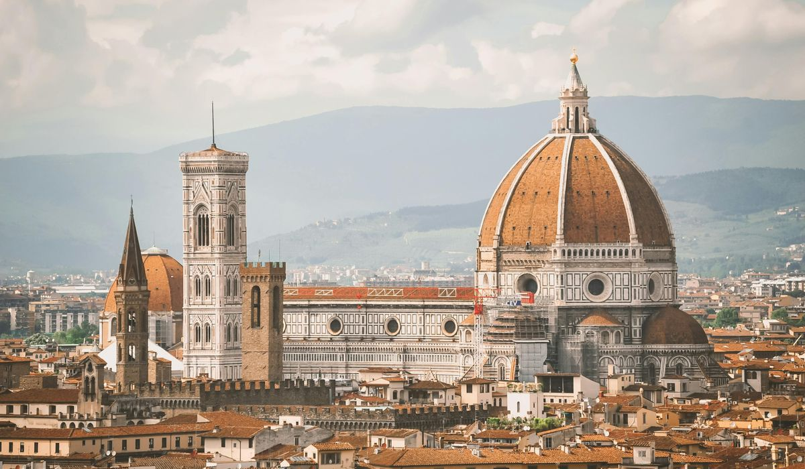
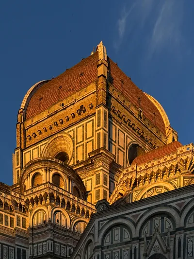
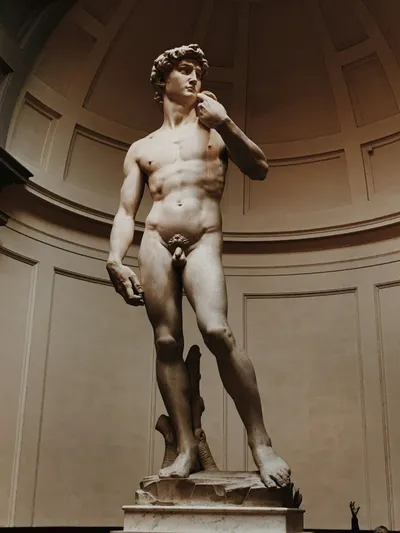

Florencia: El arte en cada rincón

Florencia es la cuna del Renacimiento, y uno de los destinos más emblemáticos de Italia. En cada rincón de la ciudad se respira arte, historia y belleza, y así pude sumergirme en esta maravillosa ciudad que ofrece una de las mejores colecciones de arte del mundo.
La historia de Florencia
Florencia fue el hogar de los Medici, una de las familias más poderosas de Europa durante el Renacimiento. La ciudad es famosa por ser el centro de la creación artística y científica de la época. En ella nacieron grandes figuras como Leonardo da Vinci, Miguel Ángel y Galileo Galilei.
Qué hacer en Florencia
Una visita al Museo de la Academia para ver el David de Miguel Ángel es imprescindible. También puedes disfrutar de una caminata por el Ponte Vecchio, el puente más famoso de la ciudad, o admirar la impresionante Cúpula del Duomo desde lo alto. Si te gusta el arte, una parada en la Galería Uffizi es obligatoria, ya que alberga algunas de las obras maestras más importantes de la historia del arte.
Consejos para viajeros
- Tiempo: Florencia tiene un clima mediterráneo, por lo que es recomendable visitarla en primavera o otoño para evitar las multitudes y el calor del verano.
- Alojamiento: El centro histórico es la mejor zona para hospedarse, ya que estarás cerca de todos los monumentos principales.
- Comida: Disfruta de la bistecca alla fiorentina, una deliciosa carne a la parrilla típica de la ciudad.

